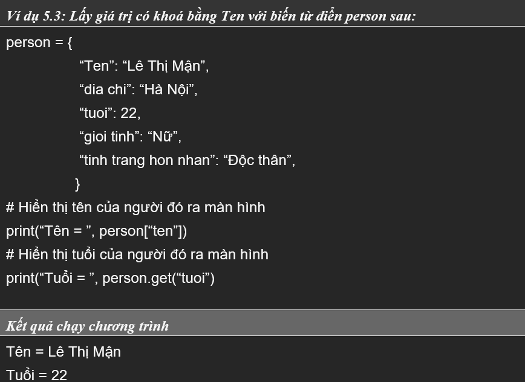
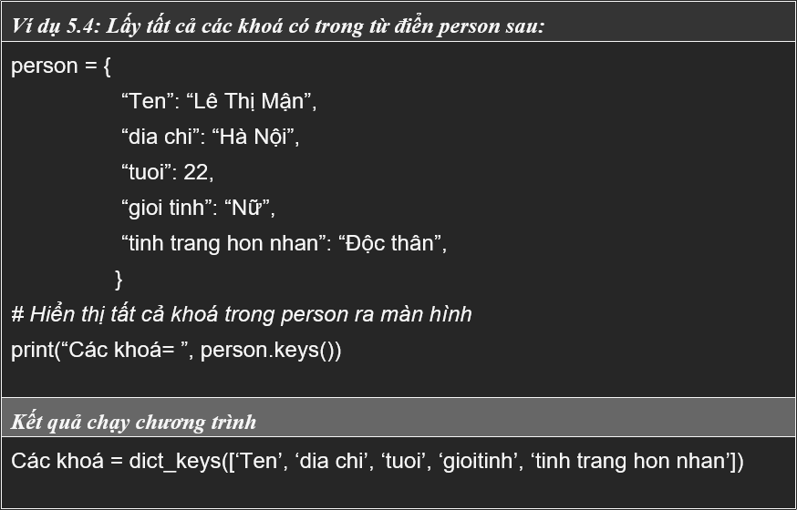
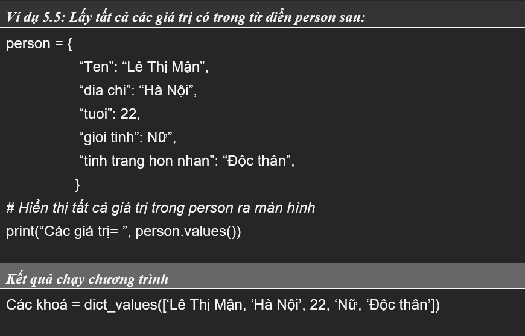

BÀI 5: TỪ ĐIỂN
Với cấu trúc dữ liệu kiểu danh sách, chúng ta có thể lưu trữ mọi đối tượng với số lượng không giới hạn và truy xuất đến từng phần tử thông qua chỉ số của phần tử. Tuy nhiên với dữ liệu có cấu trúc ví dụ như thông tin của một sinh viên gồm nhiều trường thông tin: Mã sinh viên, Họ tên, tuổi, ... ta muốn lưu trữ dữ liệu này một cách tường minh thì danh sách không làm được điều đó. Python cung cấp cho chúng ta thêm kiểu dữ liệu từ điển (Dictionary) để lưu trữ tập dữ liệu có cấu trúc, mỗi phần tử trong từ điển lưu trữ bởi một cặp < key > : < value > (< khoá > : < giá trị >) với ràng buộc khoá là duy nhất trong từ điển, một từ điển bao gồm các đặc tính sau:
-
Được giới hạn bởi cặp dấu ngoặc nhọn {}, tất cả những gì nằm trong đó là những phần tử của từ điển.
-
Các phần tử của từ điển được phân cách nhau bởi dấu phẩy “,”
-
Mỗi phần tử của từ điển là một cặp < khoá >:< giá trị >
-
Ngăn cách giữa thành phần < khoá > và thành phần < giá trị > bởi dấu hai chấm “:”
-
Các < khoá > trong một từ điển buộc phải là một đối tượng duy nhất.
5.1 Tạo từ điển
Để tạo một từ điển ta thực hiện một trong hai cách sau:
Cách 1: Sử dụng câu lệnh gán để tạo từ điển
Cú pháp:
< tên biến >={< khoá_1: giá trị_1 >,< khoá_2: giá trị_2 >, ... ,<
khoá_n: giá trị_n >}
Trong đó:
< tên biến >: Là tên từ điển do người dùng đặt
< khoá_1 >, < khoá_2 >, ..., < khoá_n >: Là danh mục các khoá được dùng
như chỉ số của các phần tử trong từ điển và các khoá này không trùng
nhau.
< giá trị_1 >, < giá trị_2 >,..., < giá trị_n> : Là dãy các giá trị được
lưu trữ trong từ điển đi theo khoá và được quản lý bởi < tên biến >. Nếu
ta không đưa cặp khoá, giá trị nào vào danh sách thì Python sẽ khởi động
một từ điển rỗng.
Cách 2: Sử dụng hàm dict() để tạo từ điển
Cú pháp: < tên biến > = dict()
5.2 Truy cập đến các phần tử trong từ điển
Cú pháp: < tên biến >[< khoá >] hoặc < tên biến >.get (khóa) >
5.2.2. Lấy tất cả các khoá trong từ điển.
Cú pháp: < tên biến >.key() #truy xuất đến thuộc tính keys
5.2.3 Lấy tất cả các giá trị trong từ điển
Cú pháp: < tên biến >.values() #truy xuất đến thuộc tính values
